1 MINUTE BRIEF - TLDR;
The Problem -
Many people with mental health issues can get overwhelmed by the amount of things they have to do, and their anxiety only gets exacerbated by the crowded and sterile UI of popular reminder apps on the market.
The Solution -
Design and implement a cross platform application with a minimal UI and feature set to gently remind users of the things they need to do.
What I did-
I worked with three other students in the research and validation phases, as well as in implementation.
I was solely responsible for the design system/visual language, and high fidelity prototypes. I was also in charge of leading and managing the UX portion of the project in general.
Core Challenges -
Carving out our product's niche and identity.
We have a lot of competition as far as reminder apps go - however, we had a clear goal to cater to mental-health reminders in both the look and feel or our app. Although we had a direction, we had to make sure along the way that users would recognize this quickly and be compelled to use this app over an Outlook calendar, for example.
Designing for rapid development cycles.
Since this is a class project, we had to make sure that our designs were actually achievable within the timeline. While prototyping, I worked closely with my computer science teammates to make sure that the gestures we wanted to implement would actually be doable within the 3-5 week implementation time frame we were given.
The Process -
RESEARCH
SKETCHING
PROTOTYPING
VALIDATE
ITERATE
The Research -
Systematic Literature Review
Our team reviewed 10 research papers on ICT-solutions on mental health as well as the ties between forgetfulness and mental-health.
The major takeaways were -
1. Based on research analyzing mental-health app reviews, users value user interface and the user friendliness of the app. They also appreciate customization and designing for trust. (Source)
2. Keep it simple - don't overload the user's cognitive load, especially when designing for those with mental-health concerns. (Source)
Competitor Analysis
We looked 12 different existing ICT-based systems related to mental health reminders and identified our market niche.
Between the twelve applications, the common complaints were feature bloat and pricing. Most reminder apps were too robust for our target audience's use cases, resulting in clunky UI and and overall poor experience. Additionally, most of the apps that were mental-health focused featured payment systems.
We found that there were no 100% free apps with a friendly, intuitive user experience to simply remind users of short term things to come.
Ideation & Iteration -
Preliminary feature-list
- Add, edit, snooze, delete reminders
- Set reminders quickly through a preset system
- Set recurring reminders
- Profile
Features added after testing & user personas:
- Completed reminders log for peace of mind
- Edit presets through settings menu
- Swipe to complete instead of swipe to snooze from home screen
- Mental health resources
- Export data for transparency and user trust
App Screen Map
Sketches and wireframing
We chose our ideation approach based off our core philosophy of simple and friendly UI. A short-form rapid ideation session with sketches on post it notes gave us plenty of ideas to work with. We grabbed the ones we thought would be successful and then continued to iterate on those through more involved paper prototypes.
These physical prototypes helped us understand in what ways users would be wired to interact with our elements. Physically touching and interacting with a paper reminder element for example showed us the value in using gestures over crowding the screen with more UI elements.